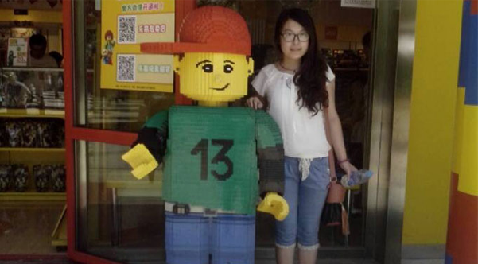

孙*军 7000-9000
企业：乐视 职位：web前端工程师
河北金融学院 计算机科学与技术 本科

就业感言
大学毕业，面临着就业有些迷茫，博看的html5是一个很有发展前景的方向，经朋友推荐来到这学习。刚开始接触HTML的时候完全不知道这是干什么的，在后来的学习中才真正的明白，所以我对它越来越有兴趣。除了课上的作业，我自己也写一些小效果，但有的时候总是会遇到很多在课堂上没有遇见的奇葩问题，还好有老师和同学们一起帮我解决。 现在我被瑞友科技外派到乐视工作，刚到乐视工作的时候看见了很多高手写的代码，完全看不懂，感觉自己就是小白。这个时候老师安慰我，要我戒骄戒躁，别看别人，做好自己的本职工作。庆幸的是乐视每周都会有技术分享，通过这些高手的分享，慢慢的我觉得我的技术也有所提升，尤其在js方面和IE6的兼容性方面。 对与要工作的学弟学妹我想说，工作中要给自己制定好计划，接任务的时候，算好时间，尽量让时间富裕一点。在工作之余多与大家交流，多参加一些团体活动。 现在我正为以后可以跟别人说我是JS高级开发工程师而努力，希望博看越做越好，可以为已经毕业的学生开在一些技术交流的活动。